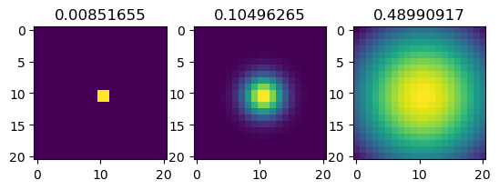
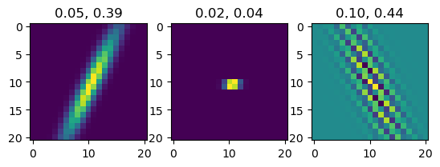
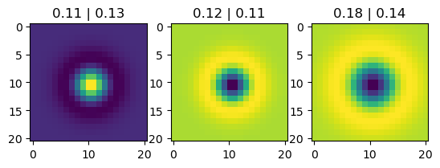
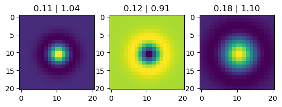

class BaseFunctional(nn.Module):
"""Base functional layer."""
features: int
kernel_size: Union[int, Sequence[int]]
strides: int = 1
padding: str = "SAME"
feature_group_count: int = 1
kernel_init: Callable = nn.initializers.lecun_normal()
bias_init: Callable = nn.initializers.zeros_init()
xmean: float = 0.5
ymean: float = 0.5
@nn.compact
def __call__(self,
inputs,
):
sigma = self.param("sigma",
nn.initializers.uniform(scale=1),
(self.features*inputs.shape[-1],))
# x, y = jnp.meshgrid(jnp.linspace(0,1,num=self.kernel_size), jnp.linspace(0,1,num=self.kernel_size))
# kernel = jax.vmap(self.gaussian, in_axes=(None,None,None,None,0,None), out_axes=-1)(x, y, self.xmean, self.ymean, sigma, 1)
# kernel = jnp.reshape(kernel, newshape=(self.kernel_size, self.kernel_size, inputs.shape[-1], self.features))
kernel = self.generate_kernel()
## Add the batch dim if the input is a single element
if jnp.ndim(inputs) < 4: inputs = inputs[None,:]
outputs = lax.conv(jnp.transpose(inputs,[0,3,1,2]), # lhs = NCHW image tensor
jnp.transpose(kernel,[3,2,0,1]), # rhs = OIHW conv kernel tensor
(self.strides, self.strides),
self.padding)
return outputs
@staticmethod
def generate_function(x, y, xmean, ymean, sigma, A=1):
return A*jnp.exp(-((x-xmean)**2 + (y-ymean)**2)/(2*sigma**2))
def return_kernel(self, params):
x, y = jnp.meshgrid(jnp.linspace(0,1,num=self.kernel_size), jnp.linspace(0,1,num=self.kernel_size))
kernel = jax.vmap(self.gaussian, in_axes=(None,None,None,None,0,None), out_axes=-1)(x, y, self.xmean, self.ymean, params["params"]["sigma"], 1)
kernel = jnp.reshape(kernel, newshape=(self.kernel_size, self.kernel_size, 3, self.features))
return kernelFunctional layers
JaX/Flax implementation of functional layers.
Base layer
First we’ll define a base class that will be used by every other functional layer.
Gaussian layer
GaussianLayer
GaussianLayer (features:int, kernel_size:Union[int,Sequence[int]], strides:int=1, padding:str='SAME', feature_group_count:int=1, kernel_init:Callable=<function init>, bias_init:Callable=<function zeros>, use_bias:bool=False, xmean:float=0.5, ymean:float=0.5, fs:float=1, normalize_prob:bool=True, normalize_energy:bool=False, parent:Union[Type[flax.linen. module.Module],Type[flax.core.scope.Scope],Type[flax.linen .module._Sentinel],NoneType]=<flax.linen.module._Sentinel object at 0x7f9094fb3cd0>, name:Optional[str]=None)
Parametric gaussian layer.
key1, key2 = random.split(random.PRNGKey(0), 2)
x = random.normal(key1, shape=(28,28,3))
model = GaussianLayer(features=1, kernel_size=21, fs=21)
variables = model.init(key2, x)
state, params = variables.pop("params")
print("Parameter shapes: ", jax.tree_util.tree_map(lambda x: x.shape, params))Parameter shapes: FrozenDict({
A: (3,),
bias: (1,),
sigma: (3,),
})import matplotlib.pyplot as plt
kernel = model.return_kernel({"params": params}, c_in=3)
fig, axes = plt.subplots(1, 3)
for k, sigma, ax in zip(rearrange(kernel, "kx ky cin cout -> (cin cout) kx ky"), params["sigma"], axes):
ax.imshow(k)
ax.set_title(sigma)
plt.show()
We can test if the precalculated filters are updated when in training mode and stay the same when in evaluation mode:
outputs, updated_state = model.apply({"params": params, **state}, x, mutable=list(state.keys()), train=True)
assert not jax.tree_util.tree_map(lambda x,y: (x==y).all(), state, updated_state)["precalc_filter"]["kernel"]CPU times: user 29.7 ms, sys: 3.08 ms, total: 32.8 ms
Wall time: 25.6 msoutputs, updated_state = model.apply({"params": params, **state}, x, mutable=list(state.keys()), train=False)
assert jax.tree_util.tree_map(lambda x,y: (x==y).all(), state, updated_state)["precalc_filter"]["kernel"]CPU times: user 10 ms, sys: 766 µs, total: 10.8 ms
Wall time: 8.17 msWe see that there is a time difference in both executions, which makes sense because when train=False, the filters don’t have to be calculated and thus the function should run faster.
And let’s see if we’re able to train the layer weights while maintaining the state:
from functools import partial
@partial(jax.jit, static_argnums=(0, 1))
def update_step(apply_fn, tx, inputs, opt_state, params, state):
def loss(params):
pred, updated_state = apply_fn({"params": params, **state},
x,
mutable=list(state.keys()),
train=True)
loss = ((pred-inputs)**2).mean()
return loss, updated_state
(l, updated_state), grads = jax.value_and_grad(loss, has_aux=True)(params)
updates, opt_state = tx.update(grads, opt_state)
params = optax.apply_updates(params, updates)
return opt_state, params, updated_state, lmodel = GaussianLayer(features=3, kernel_size=21, fs=21)
variables = model.init(random.PRNGKey(0), x)
# Split state and params (which are updated by optimizer).
state, params = variables.pop('params')
del variables # Delete variables to avoid wasting resources
tx = optax.sgd(learning_rate=3e-4)
opt_state = tx.init(params)
for i in range(1001):
opt_state, params, state, loss = update_step(
model.apply, tx, x, opt_state, params, state)
if i % 100 == 0: print(f"Loss {i}: {loss}")Loss 0: 11069.71875
Loss 100: 6.914651870727539
Loss 200: 4.417992115020752
Loss 300: 3.429502248764038
Loss 400: 2.8879692554473877
Loss 500: 2.543107748031616
Loss 600: 2.3032548427581787
Loss 700: 2.1264421939849854
Loss 800: 1.9905918836593628
Loss 900: 1.8829247951507568
Loss 1000: 1.7955070734024048The loss is going down, so everything looking good so far!
Gabor layer
We’ll repeat the process but now with a Gabor functional form.
GaborLayer
GaborLayer (features:int, kernel_size:Union[int,Sequence[int]], strides:int=1, padding:str='SAME', feature_group_count:int=1, kernel_init:Callable=<function init>, bias_init:Callable=<function zeros>, use_bias:bool=False, xmean:float=0.5, ymean:float=0.5, fs:float=1, normalize_prob:bool=True, normalize_energy:bool=False, parent :Union[Type[flax.linen.module.Module],Type[flax.core.scope.Sc ope],Type[flax.linen.module._Sentinel],NoneType]=<flax.linen. module._Sentinel object at 0x7f9094fb3cd0>, name:Optional[str]=None)
Parametric Gabor layer.
key1, key2 = random.split(random.PRNGKey(0), 2)
x = random.normal(key1, shape=(28,28,3))
model = GaborLayer(features=1, kernel_size=21, fs=21)
variables = model.init(key2, x)
state, params = variables.pop("params")
print("Parameter shapes: ", jax.tree_util.tree_map(lambda x: x.shape, params))Parameter shapes: FrozenDict({
A: (3,),
bias: (1,),
freq: (3,),
logsigmax: (3,),
logsigmay: (3,),
rot_theta: (3,),
sigma_theta: (3,),
theta: (3,),
})import matplotlib.pyplot as plt
kernel = model.return_kernel(params, c_in=3)
fig, axes = plt.subplots(1, 3)
# for k, sigmax, sigmay, ax in zip(rearrange(kernel, "kx ky cin cout -> (cin cout) kx ky"), params["sigmax"], params["sigmay"], axes):
for k, sigmax, sigmay, ax in zip(rearrange(kernel, "kx ky cin cout -> (cin cout) kx ky"), jnp.exp(params["logsigmax"]), jnp.exp(params["logsigmay"]), axes):
ax.imshow(k)
ax.set_title(f"{sigmax:.2f}, {sigmay:.2f}")
plt.show()
We can test if the precalculated filters are updated when in training mode and stay the same when in evaluation mode:
outputs, updated_state = model.apply({"params": params, **state}, x, mutable=list(state.keys()), train=True)
assert not jax.tree_util.tree_map(lambda x,y: (x==y).all(), state, updated_state)["precalc_filter"]["kernel"]CPU times: user 75.1 ms, sys: 7.56 ms, total: 82.6 ms
Wall time: 70 msoutputs, updated_state = model.apply({"params": params, **state}, x, mutable=list(state.keys()), train=False)
assert jax.tree_util.tree_map(lambda x,y: (x==y).all(), state, updated_state)["precalc_filter"]["kernel"]CPU times: user 22.7 ms, sys: 845 µs, total: 23.5 ms
Wall time: 20.6 msWe see that there is a time difference in both executions, which makes sense because when train=False, the filters don’t have to be calculated and thus the function should run faster.
And let’s see if we’re able to train the layer weights while maintaining the state:
from functools import partial
@partial(jax.jit, static_argnums=(0, 1))
def update_step(apply_fn, tx, inputs, opt_state, params, state):
def loss(params):
pred, updated_state = apply_fn({"params": params, **state},
x,
mutable=list(state.keys()),
train=True)
loss = ((pred-inputs)**2).mean()
return loss, updated_state
(l, updated_state), grads = jax.value_and_grad(loss, has_aux=True)(params)
updates, opt_state = tx.update(grads, opt_state)
params = optax.apply_updates(params, updates)
return opt_state, params, updated_state, lmodel = GaborLayer(features=1, kernel_size=21, fs=21)
variables = model.init(random.PRNGKey(0), x)
# Split state and params (which are updated by optimizer).
state, params = variables.pop('params')
paramsFrozenDict({
freq: Array([ 0.6816269, 10.3780775, 1.1226437], dtype=float32),
logsigmax: Array([-2.4631429 , -2.717532 , -0.77407956], dtype=float32),
logsigmay: Array([-3.0342553 , -2.29462 , -0.74401665], dtype=float32),
theta: Array([3.050746 , 0.9813687, 1.7434841], dtype=float32),
sigma_theta: Array([2.1122246, 2.7645009, 0.9459793], dtype=float32),
rot_theta: Array([2.5787003, 1.4155393, 0.6662881], dtype=float32),
A: Array([1., 1., 1.], dtype=float32),
bias: Array([0.], dtype=float32),
})model = GaborLayer(features=1, kernel_size=21, fs=21)
variables = model.init(random.PRNGKey(0), x)
# Split state and params (which are updated by optimizer).
state, params = variables.pop('params')
del variables # Delete variables to avoid wasting resources
tx = optax.sgd(learning_rate=3e-4)
opt_state = tx.init(params)
print(params)
for i in range(1001):
opt_state, params, state, loss = update_step(
model.apply, tx, x, opt_state, params, state)
if i % 100 == 0: print(f"Loss {i}: {loss}")
# print(f"Loss {i}: {loss}")
# print(params)FrozenDict({
freq: Array([ 0.6816269, 10.3780775, 1.1226437], dtype=float32),
logsigmax: Array([-2.4631429 , -2.717532 , -0.77407956], dtype=float32),
logsigmay: Array([-3.0342553 , -2.29462 , -0.74401665], dtype=float32),
theta: Array([3.050746 , 0.9813687, 1.7434841], dtype=float32),
sigma_theta: Array([2.1122246, 2.7645009, 0.9459793], dtype=float32),
rot_theta: Array([2.5787003, 1.4155393, 0.6662881], dtype=float32),
A: Array([1., 1., 1.], dtype=float32),
bias: Array([0.], dtype=float32),
})
Loss 0: 11759.921875
Loss 100: 6.003412246704102
Loss 200: 3.3821327686309814
Loss 300: 2.540632724761963
Loss 400: 2.1371352672576904
Loss 500: 1.9039528369903564
Loss 600: 1.7531648874282837
Loss 700: 1.6479049921035767
Loss 800: 1.5702329874038696
Loss 900: 1.510474443435669
Loss 1000: 1.4629970788955688The loss is going down, so everything looking good so far!
Center Surround layer
CenterSurroundLogSigma
CenterSurroundLogSigma (features:int, kernel_size:Union[int,Sequence[int]], strides:int=1, padding:str='SAME', feature_group_count:int=1, kernel_init:Callable=<function init>, bias_init:Callable=<function zeros>, use_bias:bool=False, xmean:float=0.5, ymean:float=0.5, fs:float=1, normalize_prob:bool=True, normalize_energy:bool=False, parent:Union[Type[fl ax.linen.module.Module],Type[flax.core.scope.Scop e],Type[flax.linen.module._Sentinel],NoneType]=<f lax.linen.module._Sentinel object at 0x7f9094fb3cd0>, name:Optional[str]=None)
Parametric center surround layer that optimizes log(sigma) instead of sigma.
key1, key2 = random.split(random.PRNGKey(0), 2)
x = random.normal(key1, shape=(28,28,3))
model = CenterSurroundLogSigma(features=1, kernel_size=21, fs=21)
variables = model.init(key2, x)
state, params = variables.pop("params")
print("Parameter shapes: ", jax.tree_util.tree_map(lambda x: x.shape, params))Parameter shapes: FrozenDict({
A: (3,),
logsigma: (3,),
logsigma2: (3,),
})import matplotlib.pyplot as plt
kernel = model.return_kernel({"params": params}, c_in=3)
fig, axes = plt.subplots(1, 3)
for k, sigma, sigma2, ax in zip(rearrange(kernel, "kx ky cin cout -> (cin cout) kx ky"), jnp.exp(params["logsigma"]), jnp.exp(params["logsigma2"]), axes):
ax.imshow(k)
ax.set_title(f"{sigma:.2f} | {sigma2:.2f}")
plt.show()
CenterSurroundLogSigmaK
CenterSurroundLogSigmaK (features:int, kernel_size:Union[int,Sequence[int]], strides:int=1, padding:str='SAME', feature_group_count:int=1, kernel_init:Callable=<function init>, bias_init:Callable=<function zeros>, use_bias:bool=False, xmean:float=0.5, ymean:float=0.5, fs:float=1, normalize_prob:bool=True, normalize_energy:bool=True, parent:Union[Type[fl ax.linen.module.Module],Type[flax.core.scope.Sco pe],Type[flax.linen.module._Sentinel],NoneType]= <flax.linen.module._Sentinel object at 0x7f9094fb3cd0>, name:Optional[str]=None)
Parametric center surround layer that optimizes log(sigma) instead of sigma and has a factor K instead of a second sigma.
key1, key2 = random.split(random.PRNGKey(0), 2)
x = random.normal(key1, shape=(28,28,3))
model = CenterSurroundLogSigmaK(features=1, kernel_size=21, fs=21)
variables = model.init(key2, x)
state, params = variables.pop("params")
print("Parameter shapes: ", jax.tree_util.tree_map(lambda x: x.shape, params))Parameter shapes: FrozenDict({
A: (3,),
K: (3,),
bias: (1,),
logsigma: (3,),
})import matplotlib.pyplot as plt
kernel = model.return_kernel({"params": params}, c_in=3)
fig, axes = plt.subplots(1, 3)
for k, sigma, K, ax in zip(rearrange(kernel, "kx ky cin cout -> (cin cout) kx ky"), jnp.exp(params["logsigma"]), params["K"], axes):
ax.imshow(k)
ax.set_title(f"{sigma:.2f} | {K:.2f}")
plt.show()
We can test if the precalculated filters are updated when in training mode and stay the same when in evaluation mode:
outputs, updated_state = model.apply({"params": params, **state}, x, mutable=list(state.keys()), train=True)
assert not jax.tree_util.tree_map(lambda x,y: (x==y).all(), state, updated_state)["precalc_filter"]["kernel"]CPU times: user 41.4 ms, sys: 4.36 ms, total: 45.7 ms
Wall time: 35.8 msoutputs, updated_state = model.apply({"params": params, **state}, x, mutable=list(state.keys()), train=False)
assert jax.tree_util.tree_map(lambda x,y: (x==y).all(), state, updated_state)["precalc_filter"]["kernel"]CPU times: user 13.8 ms, sys: 517 µs, total: 14.3 ms
Wall time: 11.5 msWe see that there is a time difference in both executions, which makes sense because when train=False, the filters don’t have to be calculated and thus the function should run faster.
And let’s see if we’re able to train the layer weights while maintaining the state:
from functools import partial
@partial(jax.jit, static_argnums=(0, 1))
def update_step(apply_fn, tx, inputs, opt_state, params, state):
def loss(params):
pred, updated_state = apply_fn({"params": params, **state},
x,
mutable=list(state.keys()),
train=True)
loss = ((pred-inputs)**2).mean()
return loss, updated_state
(l, updated_state), grads = jax.value_and_grad(loss, has_aux=True)(params)
updates, opt_state = tx.update(grads, opt_state)
params = optax.apply_updates(params, updates)
return opt_state, params, updated_state, lmodel = CenterSurroundLogSigmaK(features=3, kernel_size=21, fs=21)
variables = model.init(random.PRNGKey(0), x)
# Split state and params (which are updated by optimizer).
state, params = variables.pop('params')
del variables # Delete variables to avoid wasting resources
tx = optax.sgd(learning_rate=3e-4)
opt_state = tx.init(params)
for i in range(1001):
opt_state, params, state, loss = update_step(
model.apply, tx, x, opt_state, params, state)
if i % 100 == 0: print(f"Loss {i}: {loss}")Loss 0: 3.6809396743774414
Loss 100: 3.560849905014038
Loss 200: 3.446598768234253
Loss 300: 3.6547975540161133
Loss 400: 3.5855612754821777
Loss 500: 3.4608006477355957
Loss 600: 3.3427505493164062
Loss 700: 3.2310400009155273
Loss 800: 3.125309944152832
Loss 900: 3.025214910507202
Loss 1000: 2.9304254055023193The loss is going down, so everything looking good so far!